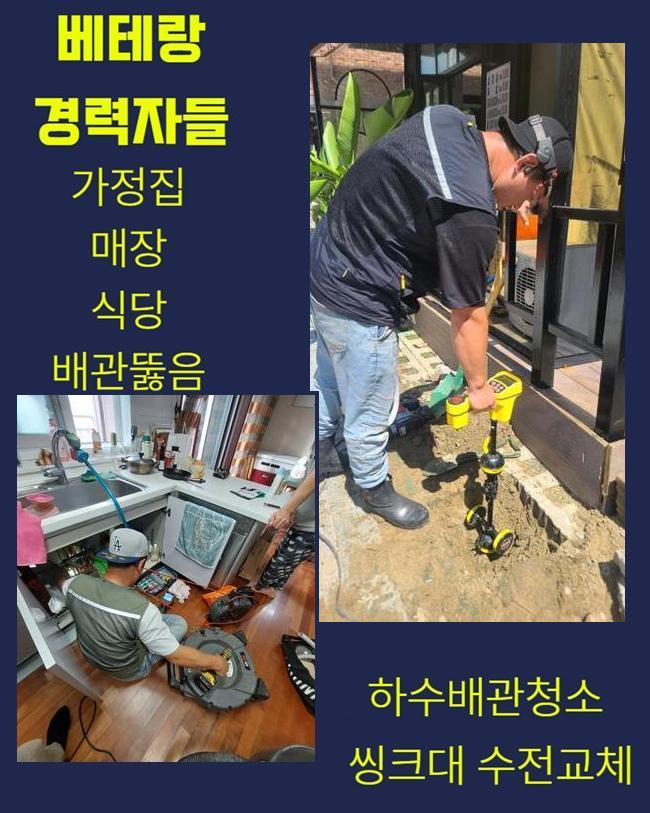
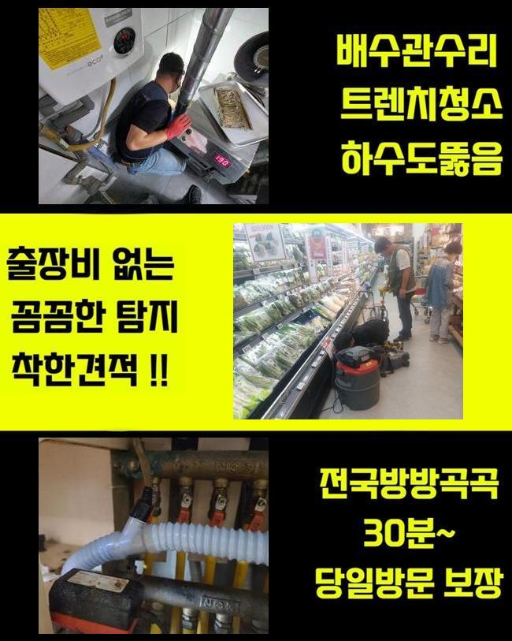
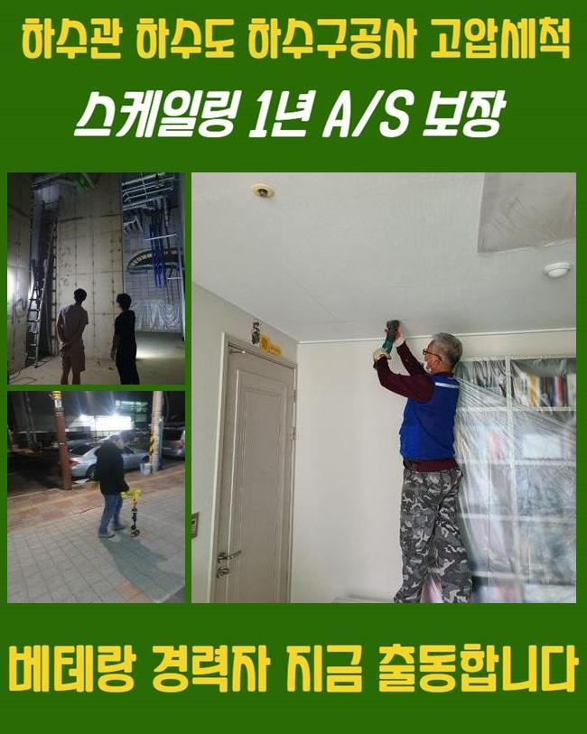
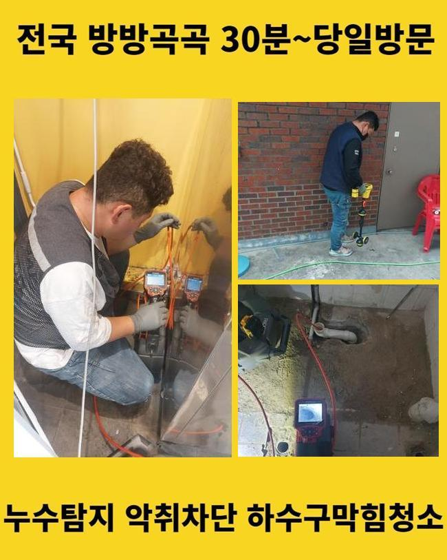
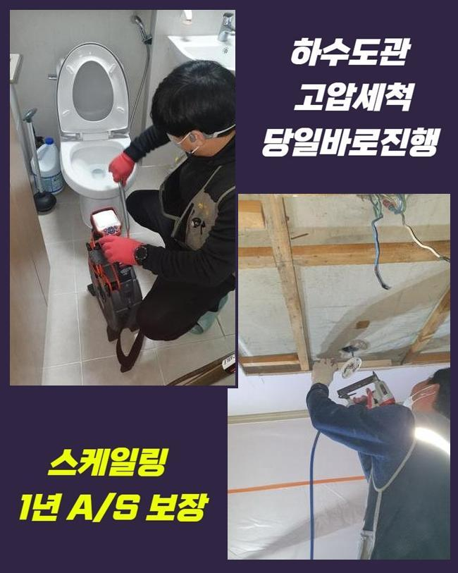
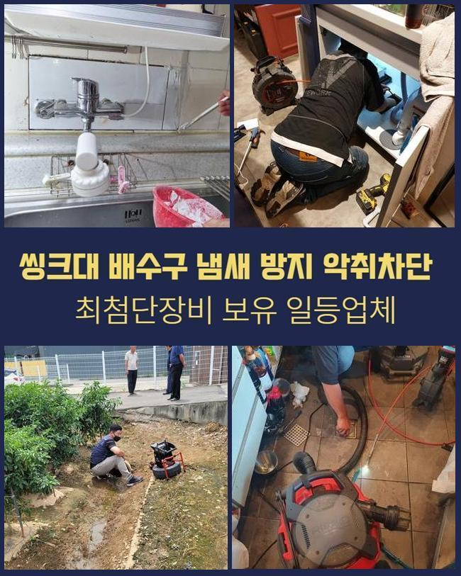
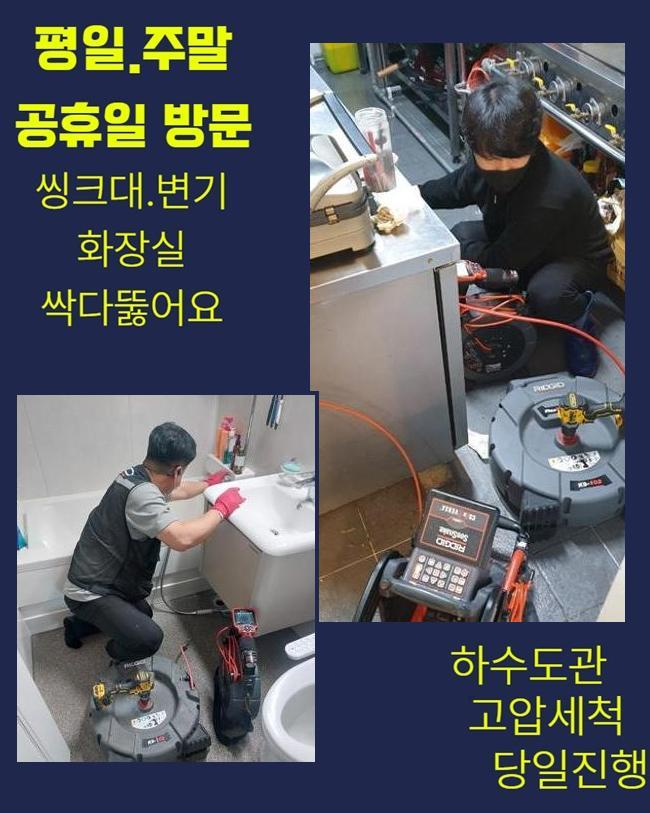

🏠 청원구 오수관청소 싱크대뚫음 세탁실하수구막힘 하수도배수관
용인 싱크대막힘 전문 시공 후기

📋 작업 개요
- 위치: 용인
- 서비스 유형: 싱크대막힘, 하수구막힘, 배관막힘, 맨홀막힘, 누수수리, 역류해결, 뚫는업체, 배관청소, 고압세척, 설비공사
- 작업 일시: 2024. 11. 21. 2:37
- 업체명: 하수구수사대 (010-5615-2118)
🔍 문제 상황
청원구 오수관청소 싱크대뚫음 세탁실하수구막힘 하수도배수관
하수관이 고장났을때 다양한 수단으로 해결하려고 하다가 종내 기술자에게 문의하는 경우가 많죠
그런 상황에서 공사견적에 관련해 우선 파악하시려는 의뢰인이 많은데요
수리비는 어느위치에서 수리하는지 또한 공사난이도는 얼마큼인지에 따라 결정된다고 볼수있죠
그리고 시공하려는 관의 사이즈와 수량도 파악하여 견적금에 반영될수 있단점을 고지드립니다
배관수리는 누구나 손쉽게 건드려서 처리되는게 아니죠
그렇기에 덮어두고 싼 곳을 검색하기보단 능숙한 기술력을 보유한 업체에서 공사하는게 합당합니다
금번에는 어제 물막힘으로 방문한 현장을 하나하나 말씀드릴까 합니다
연락주신 분은 주차장의 맨홀부근에서 구린내가 진동을 하고 가끔씩 하수가 넘쳐난다고 해요
정상 가동상태라면 오취는 내부에서 머물다 소멸되어야하고 물의 유입량이 많아졌다고 하여 역류까지 일어나지는 않죠
예외적으로 폭우가 쏟아진다면 짧은 시간 동안 설비가 감당하기 어려운 양이 들어옴으로써 역류증상이 일어날수는 있으나 일반적으로는 그러한 일이 안일어난다고 볼 수 있어요
해당 내용을 확인하니 여긴 공사가 요망되는 정황이라 추정이 가능했어요
현장쪽으로 이동하니 배수시설 쪽에서 고약한 냄새가 올라오고 있었고 주변을 보니 역류도 볼수 있었죠

🔎 원인 분석
💡 전문가 진단: 정밀 진단 장비를 사용하여 슬러지의 고착 여부를 판명하고 타격/세척 작업을 실시했습니다.
우선 정밀하게 사태를 파악하려 내시경cctv를 집어넣었어요
조사해 보았더니 여러사람이 흘려버린 생활하수가 합류하는 큼지막한 공동하수관이 위치해 있었는데요
중앙 배수관은 각 집의 하수를 모아서 외부로 방출하는 기능을 해요
여러지점에서 흘려보낸 노폐물들이 해당 위치에 모이므로 장애가 곧잘 생기는 지점이랍니다
정밀한 조사를 바탕으로 문제가 생겼는지 관측하고 초기에 진압하는게 가장 좋겠지만 그렇게 진행되지 않을때가 많답니다
그렇기에 현재 문제가 없다는 이유로 100% 믿어서는 이해하시면 안돼요
금번에 내방한 처소에서는 내시경cctv를 통하여 관찰하니 오취가 심한 관로 안에 이물들이 들어차 있다는 사실을 확인되었어요
파이프막힘을 야기하는 잔재 가운데에서 상당부분을 차치하고 있는건 유분찌꺼기들입니다
기름기는 일반온도에서 쉽게 굳어져서 점차적으로 큰 물체로 변화하게 돼요
본 현장은 하나의 세대에 국한하여 나타난 사태가 아니라 합당하게 마무리하려면 소규모 현장에서 적용하는 장비들보다는 작동력이 센 기계를 접목해야 한다 생각했습니다
우선 샤프트기기를 써서 관로에 적체된 잔재들을 처리하였는데요
그렇지만 배관 전체면을 샤프트로만 해결하는건 다소 무리가 있는 생각이고 완성도를 높이기 위해서는 여러가지 기기들을 가용할 인프라가 요망돼요
단편적인 공구들만 갖춘채 전체 수리를 진행하려한다면 다양한 공정에 부정적인 결과물을 줄수도 있죠

🔧 작업 과정
이에 그러므로 막힘해결도 어려워질뿐더러 부가적인 결함이 나타나기도 한다는걸 기억해둘 필요가 있습니다
그러하기에 전문가의 진단이 불가결하다고 말씀해 드려요
저희들은 고압물세척 기기를 이용해서 현상에 대응해 나갔습니다
이 도구는 강인한 압력으로 모터를 가동시켜 강렬한 수압으로 말미암아 배관 내측의 슬러지들을 분리시키고 벽 부위를 말끔하게 정리할수 있죠
고압세척기는 물의 분사세기를 바로바로 변경가능하여 내부시설을 포함하여 외부에 설비된 관로에도 쓸수 있습니다
통수업무를 할땐 세기 컨트롤이 요망되기도 하는데요
센 압력으로 파이프를 소쇄하는 일도 존재하며 높은 온도가 요망되는 과정도 있습니다
해당하는 사안들도 비용에 반영된다는걸 알립니다
금번에 찾아간 장소의 수선을 목표로한 세정 업무중에서도 고객분의 동의를 얻어가면서 시행했고 내시경설비로 조사해보니 관로 일부분에만 노폐물이 쌓여있는 상황이었기에 상대적으로 신속하게 정리하게 되었어요
공사를 종료한후엔 내시경카메라로 고객님이 볼수 있도록 조치하였습니다
해당 과정중 파이프가 꺾인 부분을 목도하였는데 해당하는 스팟은 찌꺼기의 정체가 나타날 가망이 커서 갈아주는게 좋아보였습니다
또 점진적으로 금이 가서 누수증상이 발현되기도 해요
그러므로 그러한 사태가 발생되기전 예방적 차원에서 손을 봐두는게 좋습니다
누수증상이 표출되면 관로 말고도 건물의 구조에도 부정적 영향을 가할수 있답니다
그렇게되면 수리부담은 한층 높아질수밖에 없죠
의뢰인께서 즉시 교환을 원하셨기에 준비한 부품을 통해 대체공정을 수행하였어요
작업의 전체내용을 이해가 쉽도록 안내드리며 업무를 이어나갔고 시설물을 관리하는 것에 연관된 주의해야할 부분도 설명드렸어요
건물의 문제점을 점검하였더니 한식집에서 음식찌꺼기와 폐유를 싱크대 하수관으로 곧장 흘려보내는 양상이 파악되었습니다
그 물질들을 배수관에 버린다면 저온상태일때 돌처럼 굳게되고 점점 침전물들이 층을 쌓게 된답니다
그때문에 관로 구멍이 줄어들고 배수를 저해할수 있죠
기름기는 시간이 지나면서 이물들을 누적시키게 되는데 그것이 배관벽에 누증되어 점점 부가적인 찌꺼기들이 엉기는 문제들이 생겨나죠


✅ 작업 완료
관로 체증이 또다시 발발하지 않게끔 음식물 처리에 주의하시도록 설명드렸어요
그건 공동하수관의 장기적인 유지와 청결한 사용에도 중요 역할을 하죠
최종적으로 다시금 빌딩내부로 들어가서 하수관 정리를 반복적으로 실시하며 관 내부에 잔류하는 이물질을 소제하고 물이 잘 내려가는지 본다음 내시경을 통해 최종점검을 완료하였어요
우리들은 여러가지 수리공구를 갖추고 존재하고 고객님의 요청에 따라 신속하게 내방이 가능해요
합당한 계획으로 수리를 해드리며 난해한 문제들도 순조롭게 처치합니다
우리팀은 체계적인 검사를 선결적으로 처리해드리니 관로의 문제로 진단이 요구된다면 시간에 구애받지 마시고 연락하시길 바라요




⚠️ 베란다 누수 및 방수 관리 방법
- ✅ 비가 많이 올 때 창틀 주변이나 아래층 천장에 얼룩이 생기는지 정기적으로 확인해 보세요.
- ✅ 우수관 주변 실리콘 마감이 들뜨거나 깨진 틈새가 있는지 손상 여부를 수시로 체크하세요.
- ✅ 베란다 바닥 타일의 줄눈(메지)이 소실되면 그 틈으로 물이 침투하여 누수가 유발됩니다.
- ✅ 누수 의심 증상 발견 시 방치하면 아래층 손실이 커지므로 즉시 전문가의 진단을 받으십시오.
💡 핵심 정리
- 확실한 장비 작업(내시경 점검 및 샤프트 스케일링)으로 원인을 뿌리 뽑습니다.
- 작업 후 1년 이내에 동일한 부위 재발 시 100% 무상 A/S 서비스를 보장합니다.
- 서울 · 경기 · 인천 전 지역에 24시간 언제든 긴급 출동할 수 있도록 항시 대기 중입니다.
❓ 자주 묻는 질문 (FAQ)
🚨 용인 싱크대막힘 문제로 고민이신가요?
정확한 원인 진단과 확실한 시공으로 재발 없는 해결을 약속드립니다.
24시간 긴급 출동 | 서울 · 경기 · 인천 전지역 | 1년 내 재발 시 무상 A/S